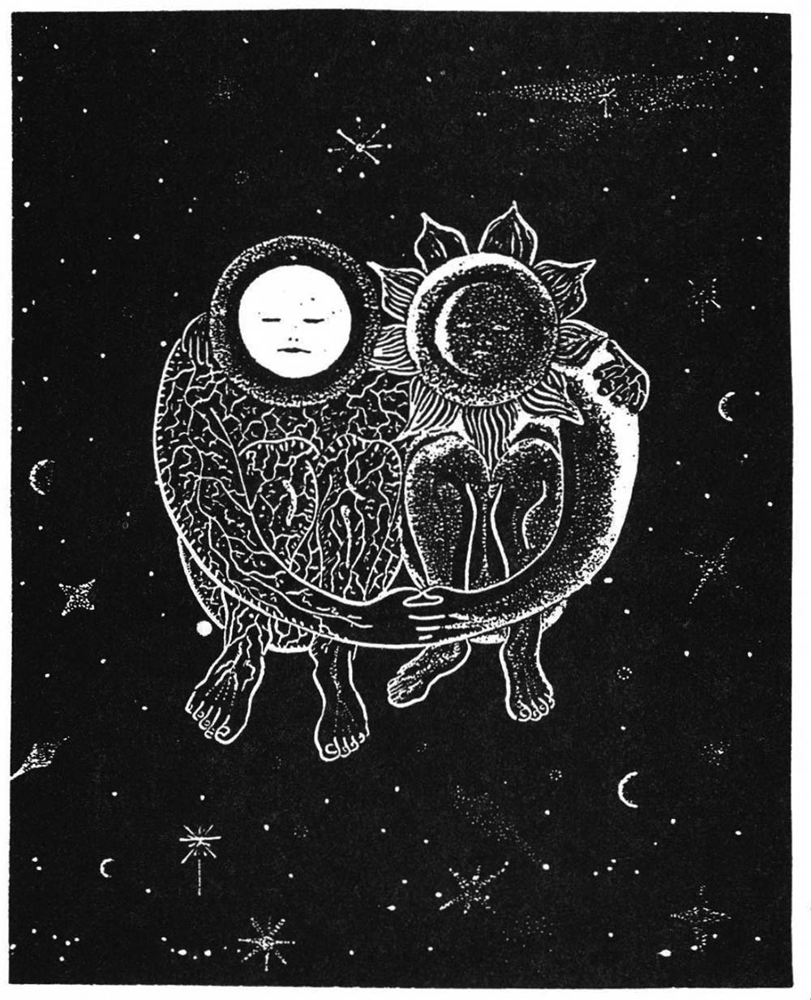

Using dream examples which combine sexual imagery and practical living guidance, I hope to illustrate the title, The Practical Side of Sexual Symbolism. By practical, I mean dream guidance about health, finances, job, creativity, relationships, self-growth and spiritual insight. By sexual imagery I mean physical sexual features and activities ranging from hugging to rape and even sexual words including sexual slang.
In the dream examples, something sexual is associated with and then substituted for something non-sexual. A non-sexual referent in the dreamer's life or thinking has been linked to the sexual imagery by association of some similarity. Let's try it. Molly reported this dream.
I'm being raped by a strange, slippery man. He has a distant smile and it is unemotional. I realize he has seduced me. He is actually a sea-creature (fish), that's why he is so slippery. His penis has gills on it. Someone whispers to me, "How do you like being had?"
Molly had the dream while considering a financial investment. The man making the offer was very flattering and persuasive. She gave him her life savings to invest and never saw him again-she'd "been had" as the idiom goes. The dream came in time to prevent the financial rape IF Molly had understood about sexual imagery as symbol. But she didn't learn about that until later, when she joined my dream study class.
Rape is easy for spotting the associative substitution process. Emotions associated with rape are ones of frustration, being taken advantage of, being violated etc. Being cheated/conned out of ones' life-savings causes the same feelings: frustration, being taken advantage of, being violated etc. Her dream was practical, trying to give Molly a warning about this "fishy," "slippery," con-man.
A rapist overwhelms a victim and takes control of the body. Similarly, drugs and alcohol can do the same thing. Then it's a matter of health. This dream offered a telling message about the dreamer's health.
I am sitting in a dark, dirty bar. The counter is sticky from spilled drinks.
The ashtrays are overflowing. The plastic barstool seat sticks to my dress. The people are dumpy looking. There is a woman with gaposis in a tootight skirt and blouse, and a couple of the men have scarred faces.
My drink is something that tastes bitter. The usual mirror is behind the bartender. I see myself there and hate sitting in this awful, disgusting place. A guy with a pock-marked face comes over beside me. It scares me. He puts his arm out stiff and leans on the bar. His face is real close to mine. I try to leave but he puts his other arm out against the bar. I'm trapped. He's saying stuff to me, but I'm so scared I'm confused. He gets mad! He unties my dress and ties my belt through my mouth so I'm gagged. He holds a knife against my throat. Then he takes out his smelly prick and rapes me right there on the barstool. I feel helpless and disgusted. No one in the whole place tries to stop him. They watch with expressionless faces. He finishes his rape. I stand up sobbing and wake up shaking."
The opening shows the dream's area of concern, the dreamer was an alcoholic. She did most of her drinking at home or at parties. The dream shows that her drinking is putting her in a disgusting position. The dirty, stinking, man who takes control of her body symbolizes her alcoholism. The health message, 'Alcohol is raping you, violating your body, putting you in a scary, disgusting position. No outsider can stop this.'
This graphic, scary, disgusting symbolism-like a nightmarereally got her attention. She had a serious problem that her dream-mind wanted her to get upset about - so she'd deal with it. After discussing the dream and Alcoholics Anonymous she felt she might try something like that.
Dream rape on a physical level could be a visual for being violated, overpowered or taken advantage of bodily, or financially. Rape can also represent being psychologically violated.
The opposite kind of situation can be represented by impotence. The next dreamer, Betty, had been trying to coax a sale to Mr. Edwards. Her dream tells her it's a waste of time.
I'm lying on my couch. Mr. Edwards is lying on the floor beside the couch. He is nude (exposed). I coax him up on top of me and try to put his cock in me. But, it is too soft. I kiss him, trying to get him aroused. But, he says, "I can't."
As it turned out he couldn't close the deal because he no longer had the necessary power within the company. This purchase happened to be the avenue his superiors used to indicate to him his loss of power within the corporate structure. The dream sexual impotence represented job impotence.

On a happier note, Brian's dream gave a go-ahead to success message. Glenn, Brian's co-worker, has had an idea for a technical product/invention. Needing help to put the idea into material form, Glenn approached Brian to share the idea and work on it together.
On television the pictures and ideas seem to come out of the air, similar to how Glenn's intuitive idea came to him. A man's wife's womb is where he places his seed to bring it to life.
Now Brian's dream.
I'm at work. Another guy and I are fixing the TV set the custodians keep in their office. [Glenn tells a vision to Brian] The guy's wife comes to the door. She's a real "Wow!" The guy looks at me, winks and says, 'Let's take her!' He takes her down to the floor and offers her to me for sex. Next thing I know, my whole head [Brian's thinking] is inside her. It's like I'm looking around inside this guy's woman. He taps me on the shoulder. I pull my head out. When I get out the TV starts working because the guy has connected up the TV antenna. [good connections are made here]. We're getting a pretty clear picture. The wife is talking to me but I wake up before I get what she said.
After taking an 'insider' look at the idea, the picture is clear. The idea is an attractive one, a real "Wow!". But, the rest of the creative project will have to be done in conscious mind, the awake state.
This next example illustrates the opposite type of work relationship. The dreamer is trying to get a business going with her friend, Jane, as a partner. The dream prognosis is not good. To nature, the object of sexual intercourse is to create new life. Birth control pills enable people to have sexual intercourse without creating new life. By association of function, birth control pills can represent the squelching of creativity. On that basis, this dream represents what the dreamer was beginning to suspect Jane wasn't going to be productive.
Jane is a servant girl in the home of a wealthy and important family [their company]. She asks me to bring her a birth control pill. The son of the family is supposed to take it. He asks me who sent it. I explain that Jane sent it. He says sarcastically, "That figures."
Then there is something sarcastic about Jane is going to take a birth control pill, too. This is so she can have intercourse with the cousin and yet not become pregnant.
Cousin sounds similar to causin'. Jane is causin' their business project not to be productive and come to fruition, she is squelching it's creative potential. The dreamer understood and broke off the partnership. She went ahead on her own and became successful and lucrative. This was good, practical relationship and business guidance from a dream.
How would sexual imagery relate to self-growth? Well, here's an example. A striptease is a dance of self exposure to arouse an audience sexually. But, symbolically a striptease could represent any act of selfexposure. Lily was a shy high school girl with an assignment to do an oral report. She practiced her performance but was still scared. Luckily her mother was a student of dreams and able to help Lily recognize the encouragement, the vote of confidence, from her dreams. Lily had this dream two nights before her oral presentation.
I am in the gym, the bleachers are filled with my classmates. From the dressing room door I catch Susie's eye. She gives me a "thumbs up." I go out and begin to do a striptease. I take off my blouse and then my skirt. I sway around to sexy music. The kids are applauding.
Surely her dream wasn't suggesting that she literally do a striptease at school! But, in view of the fact that Lily had an upcoming performance before her classmates, the striptease gave a picture of a successful self-exposure. Susie is an extrovert whom Lily admires for her relaxed manner with their classmates. Lily did her awake work carefully but the dream encouragement helped, too.

Last but not least, dream sexual activity can represent spiritual insight. Carlos is an older man who meditates daily. He has a deep interest in his spiritual development. About the dream that follows he said, "I had a peculiar dream. I have had other dreams of sex with physical evidence (wet dreams) but this was an odd one: no semen, no physical evidence.
I know I am in another dimension. The top man is showing me around his workshop. There are a lot of television sets in operation. They show people of other planets and their activities. These people only obey his voice. "I decide to do the same thing on one of the television sets. He opens a cave door and pushes me out. I see two women.. I approach them. The one with brown hair attracts me. I have intercourse with her, penetrating her in a standing position. I finished with a climax, but with no semen.
The dream opens with Carlos in another dimension, a level of consciousness beyond the physical realm. This dream will be about his relationship to the spiritual and intuitive levels of mind. At this level, a high authority controls through air waves, intuition and faith.
When Carlos meditates and follows the voice or lead of his higher consciousness, this pushes Carlos out of his cave of physical and subconscious awareness into a level where he meets intuition and spirit.
Carlos is able to stand up and face this potential . He penetrates this dimension. Of course there is no physical evidence because spiritual inspirations are not based on physical evidence.
After we finished discussing his sexual dream, Carlos said, "This reveals facts no one knows about me in my secret chambers of my mind. I am amazed." Sacred literature abounds with descriptions of divine experiences couched in sexual terms of love.
The dream examples show how sexual imagery can relate to any area of life. It is all geared to practical help in areas of daily living - health, finances, job, creativity, relationships, self-growth and spiritual insight. Mark Solms' research was right, the motivational areas of the brain are active in dream formation; as are our associative thinking processes.
Go forth and dream likewise.
Janice Baylis, Ph.D. is the author of Sex, Symbols and Dreams, available from amazon.com.